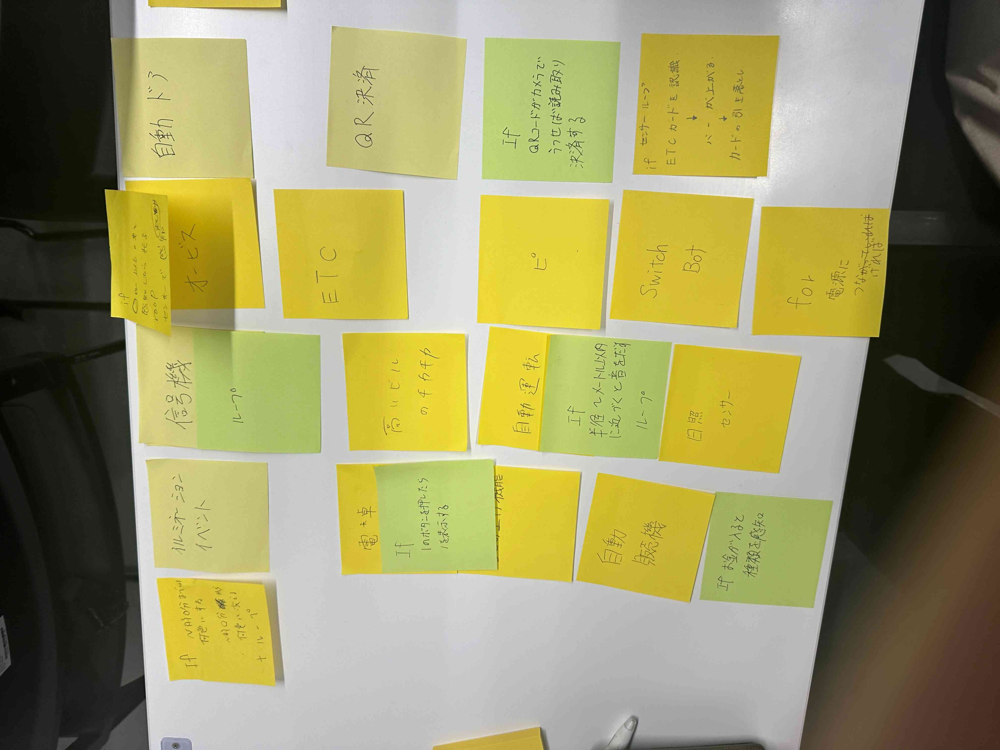

第1回課題
ポストイット画像

イルミネーションや信号機、自動運転などが上がりました
イルミネーション→〇分ごとに色を変更するループ
自動運転→半径or前方〇mの車を感知するループ（常に）& if 感知した場合距離を適切に保つ
アイデア
icチップを持つ家の鍵
鍵を開けるのが苦手でいつもうまく抜けず苦戦してしまうので学校の出席のようにICチップを内蔵した鍵を作ってタッチするだけで開けることができるといいと感じた。
ホテルなどではよくあるが普通の家でも採用してほしい。
プログラミング
近くにICチップがあるか感知する（ループ）＆IF ICチップを感知し、それが登録されたものだったら鍵を開ける。